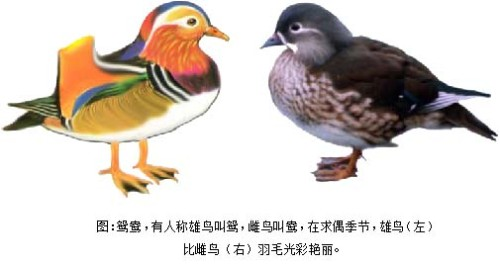
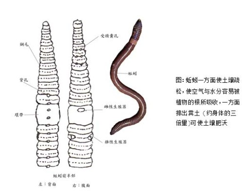
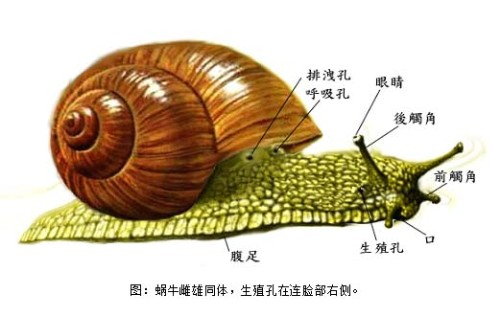
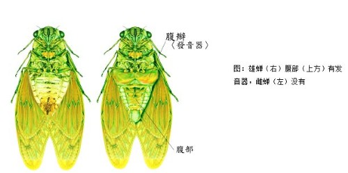
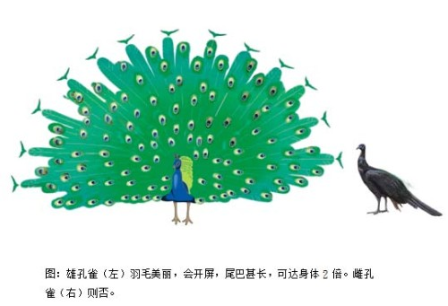
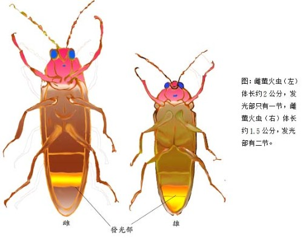
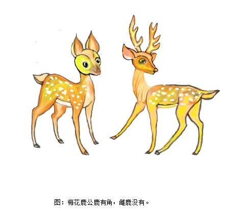

雌性或雄性（问题）
动物二性生殖并不是自然界的普遍繁殖方式，许多最简单的生物，如：单细胞原生动物，以分裂方式，将身体一分为二，增加他们的数目，但较高级的生命体，则分成雌性及雄性，繁殖过程较复杂。雌、雄之间，除性器官的构造有差别外，许多动物往往还有一些不同的性征。就以人类来讲，男、女之间，除性器官不同外，最大差异是乳房，其他如声音、胡子都是男女有别。
下面问题是测试阁下对动物雌、雄的常识。
1. 拥有艳丽羽毛的鸳鸯都是雄的？
2. 蚯蚓是雌雄同体，请问蜗牛是否也是雌雄同体？
3. 只要听到蝉鸣，虽然没有看到蝉影，也能断定是雄蝉，为什么？
4. 孔雀开屏是吉兆，但会开屏的是雄孔雀，或雌孔雀？
5. 飞在空中忽明忽灭的萤火虫是雌性？
6. 梅花鹿只有雄性有角？
雌性或雄性？解答。
1. 是的。

古人因为常看到鸳鸯雌雄共同游在水面上戏水，因此形容恩爱夫妻说是「只羡鸳鸯，不羡仙。」，实际上，鸳鸯的恩爱相随，是有点浪得虚名，雄鸟在换羽毛的季节和雌鸟相似，但在求偶季节，会长出紫色的冠羽，次级飞羽也会竖起，非常美丽。夏季，华丽的颜色消失，变成与雌鸟的颜色相同。
2. 是的。
蚯蚓和蜗牛都是雌雄同体，同时具有雌、雄性器官。 蚯蚓外形分节像橡皮管，腹侧面每一体节都有一到数对刚毛。刚毛的用途是把身体固定在泥土表面，随意改变角度。 蚯蚓为雌雄同体，生殖时行异体受精。每只蚯蚓有两对睪丸和一对卵巢，交配时两只紧靠在一起，彼此头尾相反，使双方的输精管和轮卵管的开口相合。 蚯蚓以阴湿泥土的有机物为食。再生力强，切断牠的身体，也能再生，在土中钻行，一方面使土壤疏松，使植物的根容易吸收空气与水分，一方面排出粪土 (约身体的三倍量)可使土壤肥沃。 蜗牛是雌雄同体，同时具有雌和雄的器官。牠们的生殖孔是位于右触角的后方，通常两只蜗牛互相交配，也就是互相交换精子。交配的季节，大多是在气候湿暖的5、6月间。而后产卵。也有些蜗牛是卵胎生。如烟管蜗牛不产生卵而直接生出小蜗牛。


3. 是的。
雄蝉的腹部有二片略呈扇形的腹瓣，腹瓣里面有一层白色的薄膜，就是发出蝉鸣的振动膜。蝉的中腹上方有块V字形的肌肉，它收缩时会拉动振动膜和腹瓣，
因为腹瓣的摩擦和振动膜的振动而发出声音，同时又因为蝉的腹部的共鸣箱作用，声音特别嘹亮。

4. 是的。
孔雀被视为"百鸟之王"，是吉祥、美丽、华贵的象征。
每年春季，孔雀开屏次数最多，为什么呢？孔雀开屏和季节有关吗？我们知道，只有雄孔雀才能开屏。雄孔雀的羽毛美丽，而雌孔雀羽毛平凡。雄孔雀身体内的生殖腺分泌性激素，刺激大脑，展开尾屏。春天是孔雀产卵繁殖的季节。于是，雄孔雀就展开它那五彩缤纷、色泽艳丽的尾屏，还不停地做出各种各样优美的舞蹈动作，向雌孔雀炫耀自己的美丽，以此吸引雌孔雀。待到它求偶成功之后，便与雌孔雀一起产卵育雏。

5. 不对。
雄萤火虫和雌萤火虫发光的方式不同，发光的强度也不同，雄萤火虫喜欢在飞行中发光，在空中忽明忽灭，光的强度也较强。雌萤火虫静静待在树叶间，发出弱光。雌的发光器在腹部末端第二节处，雄则在末端一、二节，雄体长约1.5 公分，雌约2公分。

6. 是的。
梅花鹿因背上有白色似梅花的斑点而得名，通常公鹿的体型较大，角长可达七十多公分，而雌鹿的体型较小，且头上无角。 雄鹿在两岁时开始长角，每年增加一个分叉，五岁后才停止分叉，当秋季交配的季节来临时，雄鹿会彼此斗角，以争取鹿王的地位及与雌鹿交配的权利。
